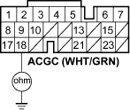
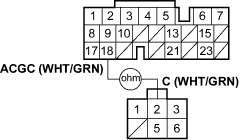

- Check for continuity between ECM connector terminal B18 and body ground.
ECM CONNECTOR B (24P)

Wire side of female terminals
Is there continuity?
YES - Repair short in the wire between the alternator and ECM. 
NO - Substitute a known-good ECM, and recheck (see page 11-5).
If prescribed voltage is now available, replace the original ECM.
- Turn the headlights and ignition switch OFF.
- Disconnect ECM connector B (24P).
- Check for continuity between ECM connector terminal B18 and engine wire harness 6P connector terminal No. 2.
ECM CONNECTOR B (24P)

ENGINE WIRE HARNESS 6P CONNECTOR
Wire side of female terminals
Is there continuity?
YES - Repair the alternator (see page 4-29).
NO - Repair open in the wire between the alternator and ECM.